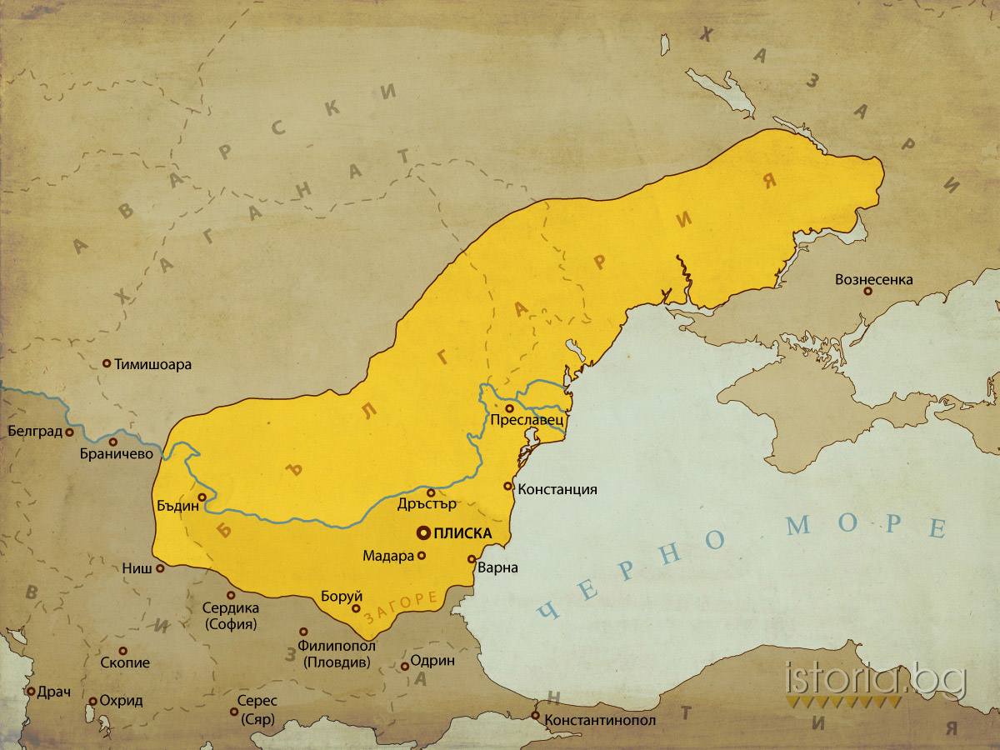

Линия на времето
България в периода 1185-1396
1185
1185
Въстанието, ръководено от братята боляри Асен и Петър отхвърля властта на
Византия през 1186 г. Поставя се началото на Второто българско царство със
столица Търново. За цар е провъзгласен Петър, а после и Асен. Българската
държава е възстановена в територията между река Дунав, Стара планина и Черно море.
701

701
След смъртта на Хан Аспарух през 701г. във войната срещу Хазарите
синът му Хан Тервел поема властта над държавата.
Юстинян II отива при Хан Тервел с молба за помощ, защото бил
свален от пресрола на Византия. Хан Тервел помага на Юстинян II, и
в знак на благодарност получаваме областа Загоре с която българия
се разпростира на юг от Стара Планина.
718

718
През есента на 717 година огромна арабска армия водена по суша от
халиф Сюлейман ибн Абдул-Малик, а по море от командващия флота негов зет
Маслама Ибн Абдел-Малик, комуто впоследствие е поверено цялото командване,
потегля към Константинопол и го обсажда от всички страни.
През пролетта на 718 година хан Тервел повежда българските отряди
и достига в близост до Цариград. Тервел преценява, че арабското нашествие
няма да спре с падането на Константинопол и поради това приема молбата за помощ.
Той разгромява арабската армия състояща се от 20 000 военни. След тази битка в Европа
той е наричан спасителят на Европа, защото ако арабите бяха преминали са щели да стигнат
до Европа и тя да бъде в опастност.
803

803
В периода междо 718-803 са управлявали следните ханове: Хан Кормесий (718-738);
Хан Севар (738-753); Хан Винех (753-760); Хан Телец (760-763);
Хан Савин (763-765); Хан Паган (765-766); Хан Телериг (766-777);
Хан Кардам (777-803). За тях историятя не говори много и не се
изочават в училище. След хан Тервел се минава на Хан Крум управлявал (803-814),
който е разширил българия двойно. По негово време са поставени първите закони.
814

814
Хан Омуртаг не разширява териториятя на българия но поставя 30 годишен
мирен договор с Византия. Хан Маламир гиби малко територии, но завзема
Филипопол(Днешен Пловдив).На кртата са изобразени птомените от Хан Маламир.
Хан Омуртаг оправлява междо (814-831). Хан Маламир оправлява междо (831-836).
862

862
През 862г. Кирил довършва славянската азбука започната от
него и вече починалият му брат Методий през 855г.
Това се случва по време на управлението на Хан Борис I, който
още не е получил титлата княз, защото още не е бил
покръстен. На снимката е показана глаголица.